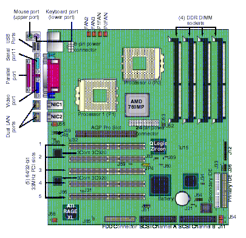

| The Ultimate Linux Box 2001: How to Design Your Dream Machine: (Bigger, Longer, and Uncut) | ||
|---|---|---|
| <<< Previous | Next >>> | |
Now that we've laid out the principles, it's time to do the practice -- specify and build an actual machine.
In July 2001 the clear standout choice for a ULB motherboard is the Tyan Thunder K7, model S2462 -- brand-spanking-new technology and the only dual-Athlon board in production. This baby is the cutting edge in PC board design, and a good indicator of where board design will be going in the next twelve months to three years.
Why only 1200MHz Athlons rather than Intel's 1800MHz P-IV? Two reasons. One: the P-IV doesn't yet have hooks for multiprocessor operation. Linux is good enough at SMP that two 1200s would beat a single 1800 if the chip architectures were the same. But, two: the P-IV is a dog. Its cache system is badly misdesigned, and various reviewers have shown that under common job loads it's actually slower than a P-III!
Look at what you get with this board:
AMD-760 MP chipset, AMD-762 North bridge ATA controller,
AMD-766 South bridge
Four 2.5v 184-pin Registered DDR DIMM sockets
Supports up to 3GB of ECC 72-bit PC2100 Registered DDR RAM
Winbond W83627HF Super I/O ASIC for port control.
Winbond W83782D hardware monitoring ASIC; 3-pin fan monitoring headers
CPU temperature and voltage monitoring
1 AGP Pro slot, 5 64/32-bit 33MHz (5-volt) PCI slots
On-board PCI IDE supporting up to four devices.
Two 3Com 3C920 10/100 Ethernet LAN controllers.
ATI RAGE XL graphics with 4MB SDRAM framebuffer, VGA port.
One floppy connector supports up to two drives
One 9-pin 16550-based serial port
One 25-pin SPP/ECP/EPP parallel port
Four USB ports (two ports via optional cable)
PS/2 keyboard and mouse ports
Phoenix BIOS 4Mb Flash ROM supporting APM v1.2 and ACPI v1.0.

Full specs are at the Tyan site -- but the short version is that this board should have "Born To Run Linux" stenciled on it in day-glo orange. Every single piece of hardware on it with a software API is well-supported by the stock 2.4 kernel.
There are good and bad consequences of having your peripherals on board like this. The good one is that you're cutting the amount of glue logic and connectors in the machine. This means the board has fewer points of failure, and will throw less heat and radio noise. While radio noise is no more than a nuisance, we've observed previously that thermal stress is the main enemy of component life -- and given the large amounts of heat thrown off by today's processors this is a serious issue today in a way it wasn't in 1996. Several of the decisions we'll make further on are aimed at reducing the temperature inside the case.
The downside of integration is that it makes fault recovery more difficult. You want to minimize the chance that a failure in one on-board component will require an immediate motherboard swap. So it's reassuring to discover from the S2462 manual that all the on-board peripheral chips except the IDE controller can be jumpered out. The IDE controller can be disabled from the BIOS setup screens, a good thing to do as it frees up some IRQs.
Now for another upside -- this board is available (unpopulated) for just $499 on the net, quantity 1! This is an astonishing price given the amount of stuff integrated onto the board.
A final downside, for some people: while the Athlon itself is relatively easy to overclock, this board has no overclocking options (there are no jumpers or accesses to control the clock multiplier). We don't care, but there are hackers in the world who value raw processor performance over stability so much that they just don't feel right running their processors at merely the rated speed.
Two vendors have been qualified by Tyan to build high-density memory for this board; Kentron and Smart. Smart's stuff is slightly cheaper, but we go with Kentron because they use non-stacking DIMM modules to avoid thermal hot-spot problems. Since we're going to stick with the 2GB maximum Tyan tells us they have qualified with the board, we can use their 512MB modules.
Most people reflexively evaluate computer cases just by their physical size (small is good if you want to fit it on top of a desk) and their expansion capacity (mainly the number of drive bays). But internal expansion space isn't very important any more, not when two half-height drive bays will hold your two SCSI spindles and more disk storage than you'll ever need. External slots are more important; let's count them. With current technology you want two hard disk bays (hidden), one CD-ROM, one tape, one floppy, and perhaps a DVD drive. That's one exposed half-height 3.5" bay, three exposed half-height 5.25" bays, and two hidden half-height 5.25" bays. Even many mini-tower cases have that much capacity!
There are several other things you want from a case that are just as important. Three are good airflow design, component accessibility, and noise attenuation (in that order). Attenuation of radio-frequency noise can matter too if you're going to use a computer near other electronics (such as the boom box I listen to Joe Satriani on whilst hacking), but you should get this for free if you specify a good-quality steel or aluminum case. Finally, you may also want your case to look neat.
Good airflow design is actually the best reason to buy a large case. You want there to be plenty of room for cool air to flow around the heat-generating electronics. This doesn't mean you should make a habit of running your computer with the case off, however. Without the ducting effect of the case, the fans may not force enough airflow to keep your electronics safely cooled.
One of the S2462's few drawbacks is that at 13x12" it's larger than a normal ATX board. This constrains our choices. Tyan's site lists cases that have been mechanically qualified with the board, so I shopped around for a full tower on that list. Most of the cases were pretty generic stuff being pumped out by Taiwanese companies with garish Web pages festooned with broken English and cheesy Javascript; I rejected them because if their websites were that bad their technical documentation seemed likely to be worse. One vendor, Palo Alto Products, looked like a classier act but is clearly geared to high-volume orders from OEMs and contract manufacturers (they make cases for Dell and Micron).
The vendor I went back to was Antec. Antec's Performance Series offers a number of cases that Tyan qualifies, ranging from mini-towers up to caster-mounted oversized server cases. The swing-out side panel and quick-release drive bays featured on all of these appealed to me. Reviewers consistently described Antec as solid hardware with excellent airflow and cooling properties, and easy to work with (apparently they are quite popular among overclockers). My interest was especially caught by one measurement that with two Antec-provided fans the SX800's external noise level remains under 35dBA. Given that these are probably cheap sleeve-bearing fans, the case attenuates about 8dB.
When the design evolved to include both the front panel controls for a sound card and a DVD player, the three exposed 5.25" bays on the SX800 weren't enough any more. I went with the SX1200, the full-tower version with seven exposed bays. There is a product page.
For the power supply, the three of us easily agreed on a vendor: PC Power & Cooling. A lot of people treat power supplies as a commodity, so many interchangeable silver bricks. We know better -- cheap power supplies go bad, and when they go bad they have a nasty habit of taking out the delicate electronics they're feeding. PCP&C has a reputation for making good ones -- and, as a bonus, quiet ones. The company rates its supplies in decibels as well as wattage and boasts that its "Silencer" series puts out less than a tenth the noise of a typical generic power supply.
Sadly, the rated wattage of their heaviest-duty Silencer tops out well below the 460W that Tyan recommends. However, PCP&C justified our confidence when they told me of their brand-new 450A4 unit. This is a variant of their rock-solid TurboCool 450ATX power supply specifically designed for use with the Tyan TY 2462, and so new that it didn't have a spec page of its own on the PCP&C site yet. It's a nice warm fuzzy feeling to know the board and power supply are properly matched. And at 44dBA, the A4 counts as pretty quiet.
Next, we'll tackle the CPU's own cooler -- the fan/heat-sink combination that sits directly on modern hot-running processors and keeps them from melting down their own silicon (the maximum operating temperature for Athlons is 95°C). In May 2001, Tom's Hardware site did an article on Extreme cooling. In it, they compare 46 PC coolers. The article tellingly notes: "AMD's new Athlon processors above 1200 MHz practically beg for a powerful cooling system. Using a cheap generic cooler is just not worthwhile in that scenario."
The four critical statistics of a CPU cooler are (1) weight, (2) cooling capacity, (3) dBA of emitted noise, and (4) price. For our purposes, we don't care about weight or price. We care a lot about cooling capacity, and Tom's Hardware confirms that our choice can make a huge difference. Running AMD Athlons at 1000MHz, a configuration close to ours, they found a difference of 24 degrees Celsius (43 degrees Fahrenheit) between generic coolers and the best of breed (the actual range was 54°C to 30°C).
Tom's Hardware evaluated 46 coolers and found a clear standout: the Silverado from Noise Control, Inc. They rated it best in cooling performance at 30°C and second-best in noise emission at only 37dBA. That's pretty good, since typical coolers emit about 50dBA; one reviewer commented that the Silverado is so quiet that it's hard to tell it's running. The Silverado's only real drawback is that it's large -- 80mm long, 56mm wide, 113mm high -- so you need to be careful about case clearances. Fortunately our Antec case is plenty roomy.
So far, our design has two fans -- the PC cooler and the power-supply's internal fan (which draws air out of the machine). Experience shows this isn't enough. With generic power supplies, it's unwise to count on the power-supply fan doing more than venting the heat that the power supply itself generates. PCP&C's are engineered to do better, but smart system builders will treat that as safety margin and deploy at least two additional case fans anyway.
We can learn from the overclockers here. One guide to case airflow and cooling teaches that setting up a good cross-draft inside the machine with a few fans is better than having lots of fans just stirring the case atmosphere. One simple but effective deployment features just two case fans: one placed near the power supply at the rear and helping it pull air out of the machine, and another at the front vent pulling outside air into the case.
We can avoid having our case fans add more than a bare minimum to the machine's decibel output by specifying cooling fans that, like the fan in the A4 power supply, have ball bearings rather than the cheaper and more common sleeve bearings (Papst is one of the better-known quality brands). This will cut machine noise by an appreciable degree, especially the annoying ringing or whining high-frequency component (which is mostly bearing noise).
PC Power and Cooling, as it turns out, makes 20dBA Silencer 80-millimeter ball-bearing case fans that are matched to their power supplies. If you order these, be sure to specify the three-pin connectors (so they can be driven off the motherboard fan headers) rather than the conventional 4-pin connectors (meant to be plugged direct into the power supply).
Ideally, we'd like our case fans to have a so-called "tach wire" that reports the fan's speed back to the motherboard, so we can monitor for failing fans. The S2462, like most motherboards designed for server applications, has fan-monitoring headers on it. Unfortunately, tach-wired fans tend to be heavy-duty, noisy models designed for server use. PCP&P makes them, but they have 40dBA noise output.
Disk storage is a topic much dearer to the typical hacker's heart. Since we've chosen SCSI, it's also a lot simpler -- SCSI parts tend to be good quality, and the SCSI standard is strong enough that card vs. drive interoperability problems are extremely rare (not unknown, though; they can pop up in SCSI RAID configurations, which is one reason we're not RAIDing).
We know we're going to be specifying fast-wide LVD drives that can handle the 160MB/sec that the S2462's controller pumps out. Within that class, the important statistics are seek time, rotational latency, capacity, heat dissipation, and noise output. Mean time between failure is long enough on the leading brands that you're quite unlikely to see one before your system is years obsolete (provided you don't lose it to a bad power supply or a lightning strike). In accordance with the discussion in the first part of this article, we'll make a basic design choice to put good seek time first.
I went to the storagereview.com site, which collects statistics and reviews on leading disk drives, and selected five well-known brand-name 160MB SCSI drives. There I was able to get data on seek time and disk RPM (which predicts rotational latency), but not heat-dissipation figures.
Heat-dissipation figures for SCSI drives, it turns out, are hard to come by. I searched the Web diligently for systematic comparisons without success. One thing Rick Moen and I do know from experience (and which is confirmed by Web reviews) is that Seagate SCSI drives tend to run particularly hot. That's a useful warning, since they're the default brand for a lot of people.
My storagereview.com search confirmed more anecdotal evidence from Rick. He likes IBM's current product line, the UltraStar. With a 4.2ms seek time, they edge ahead of competition from Seagate, Quantum, and Fujitsu. Rick believes they run relatively cool, too, and we hear they smoked the competition in some comparative trials run by Evi Nemeth at the CAIDA project. So we'll add two IBM UltraStar 36Z15 drives to the parts list.
We want to be able to read (and write) CD-ROMs, too. Once again storageview.com confirms Rick Moen's anecdotal report, tapping the 32-speed Plextor PX W1210TS as the best-of-breed among SCSI CD-RW drives.
Rick observes: "CD-R/CD-RW drives, by their nature have head assemblies much more massive than those of ordinary read-only CD drives. (Why? Because they mount burn lasers.) Much greater mass means much greater inertia, and much faster mechanical wear -- and the considerable heat generated during burn cycles also takes its toll. Accordingly, the MTBF times for CDR/CDRW drives are markedly shorter than for regular CD drives. One should not use CDR/CDRW drives for mundane read operations, but rather just for CD-burning. Accordingly, if you really have need for a CDR or CDRW drive, you also need a second, read-only drive for everyday CD-reading."
Daryll chimes in with: "Buy a DVD-ROM, rather than an ordinary CD-ROM. Typically the transfer rates are just as good if not better (because the base DVD rotational speed is higher to begin with)."
While meditating on Daryll's remarks I realized that a DVD is a must-have for another reason; any true dream system for a Linux hacker must include the ability to violate the anti-fair-use clauses of the Digital Millennium Copyright Act by running DeCSS on a daily basis -- even if (like me) the hacker is basically uninterested in DVDs per se. It's ethically imperative.
I gave brief consideration to DVD-R, DVD-RAM, and DVD-RW, the technologies bidding to succeed DVD-ROM by adding various levels of rewritability to the medium. But these would have the same problem of higher thermal load and mechanical wear that motivated us to install an alternative to the CD-RW driver. And none is yet established as a standard, so we could end up carrying that load for nothing. We'll stick with DVD-ROM for this system.
It appears there are presently just two models of SCSI DVD-ROM available, the 304S/305S by Pioneer and the SD-M1201B by Toshiba. The Toshiba is 5X as a DVD drive and 32X as a CD-ROM drive; the Pioneer's numbers are 10X and 40X. Easy call, especially as the Toshiba is actually more expensive. Pioneer 105S internal SCSI version, slot-loading.
Like most DVD drives these days, the 305S is region-locked; that is, there is firmware that prevents it from playing DVDs that are not marked for the same region you bought the drive in. It's possible to download firmware-hacking utilities that defeat the region-locking system; alas, you'll presently have to boot Windows or DOS to do it.
Despite diligent searching, I was unable to find good comparative information on DDS4 drives on the Web. When you can't find objective reviews, fall back on history -- and history says that the top-of-line Hewlett-Packard tape drive is either going going to be the best of breed or very close. The top of line HP DDS4 drive appears to be the C5685, with a capacity of 40GB and a transfer rate of 21.6GB/hour (assuming hardware compression). We'll add a bulk-pack of ten Maxell DDS4 tape cartridges and an HP 50-pass cleaning tape.
For the ULB, nothing less than a 21-inch monitor cranking the best-available 2048x1536 resolution will do. As for picking the best, PC World ran a June 2001 roundup of Top 10 21-Inch-Plus Monitors. PC World's choice of operating systems may be sadly benighted, but they're good for testing monitors.
For my purposes, clearly displaying lots of text at relatively small font sizes is the most important thing I want a monitor to do (the acid test is whether I see jaggies on the curved portions and serifs of small fonts). Thus I pick the only monitor they rate Excellent at both text and graphics, the Mitsubishi Diamond Pro 2060u. It supports 2048x1536 at 75 Hz, a refresh speed comfortably above flicker level.
Daryll is a graphics expert and part of the team working on the Linux drivers for ATI's high-end Radeon card. He tells us that for the foreseeable future (or at least until nVidia gets a clue about open source) the Radeon will be the best high-end graphics card with entirely open-source drivers. So we add one ATI Radeon 8500 64MB card.
Because this is a development box rather than a gaming machine, it's more important that a sound card be well supported with stable drivers than that it hug the bleeding edge of audio technology. I found a frequency response comparison of top brands, last updated April 2001, and checked Linux's Configure.help to see which supported card rated highest. Excluding a couple of cards like the Turtle Beach Pinnacle and Fiji that are no longer manufactured, the safe choice seems to be the Sound Blaster Live Platinum 5.1. There is a Linux Page for these cards; Creative Lab's product page describes the entire line.
(Alas, this turned out to be a poor choice. See the update to this article.)
We'll need speakers to go with the sound card. I found a July 2001 comparative review of PC speakers at ConsumerSearch. Their top pick, rated excellent for both game play and music, is the Klipsch ProMedia 2.1. (Surf warning: Klipsch's corporate website is very badly designed and difficult to navigate, a prime example of Active Server Page hell -- it crashes Netscape, is unusable with Lynx, and mysteriously fails to display data under Mozilla.)
Like many hackers of a certain age, I imprinted on the IBM Model M keyboard about twenty years ago. If you know about these, chances are you think of them as "PC-1" keyboards; they were the heavy-metal-encased keyboard used on the early IBM PCs and ATs (and modeled on earlier IBM Selectric typewriters). They have a relatively stiff travel with a sharp break and a positive keyclick that can only be described as "crunchy". They inspire cultlike devotion.
If you're used to one of these, the modern "soft-touch" or "quiet-touch" keyboards based on membrane-switch technology are pallid, pathetic objects with a mushy and unsatisfying feel. Sadly, the Happy Hacking keyboard esteemed in some quarters is one such (though a nice concept otherwise). For the dream machine, I want a real keyboard.
I'm currently using a "Linux Cool Keyboard" someone gave me, which approximates the Model M feel pretty well, but I can't recommend it. The manufacturer won't give out the source for the special driver that enables the penguin and Linux keys -- a bad attitude for a Linux company to have. A pox on them...
The keyboard shipped with my VA Linux YMP27 doesn't do quite as good a job of emulating the model M feel as does the Linux Cool keyboard, but I like it a lot better than most of the others I've tried. It's a model RT8255C+ manufactured by NMB technologies. Alas, NMB's mechanical keyboards are about to be end-of lifed as I write!
It turns out that what is nowadays called `mechanical' or `tactile-response' keyboard is increasingly hard to find. Keyboard manufacturers have moved towards membrane switches because they are cheaper to manufacture; mechanical keyboards are now specialty items. I found a supplier at Datadesk, but their keyboards are practically novelty items with small footprints and pastel-colored keys. Fujitsu makes a more familiar looking Model FKB4725. Unfortunately it comes complete with ugly Windows keys.
However, it's still just possible to buy the real model M, armor-plated case and all. They're not being manufactured any more, but old stocks are still being sold. You want these IBM model numbers:
IBM 101 key buckling-spring KB
IBM "SpaceSaver" compact, heavy-duty 84 KB
They're both available from Unicomp. The dream system will get one of the 101-key "PC-2" versions.
When the Model Ms run out, there is a company called Creative Vision that advertises mechanical-keyswitch keyboards. I'm told they're made to the design of the old Northgate brand.
We've finished the heavy lifting. Now to tidy up the odds and ends; mouse, floppy drive, modem.
For my own use, I'll keep my original three-button Logitech Trackman Marble, because you just can't improve on perfection. Sadly, Logitech doesn't make the original Marble any more; the replacement has a rather obtrusive wheel replacing the middle button (it can be clicked). Still, this is a damn near ideal 2D pointing device.
There is only one possible modem for the dream system -- the U.S Robotics V.Everything, external version. This featureful, rock-solid reliable modem is the first choice of discriminating hackers everywhere. Rick Moen has written an entertaining rant on the likely consequences of choosing lesser external modems, or any internal modem at all.
Rick comments: "I've never had an external modem fry crucial VLSI circuitry on my motherboard. I've never had an external modem contribute to my system box's heat load. I've never been unable to power-cycle an external modem without rebooting the attached system. (Of course, many people reboot their machines every time the computer sneezes, so one more reboot passes without notice. But when we are no longer children, we put away childish operating systems.) I've never had an external modem prevent me from debugging serial-port-support problems separately from modem issues. I've never had an external modem be unable to be used on a different chip architecture, or PC with the wrong set of busses. I've never had an external modem create RFI problems inside my system box."
"Frankly," he concludes, "fsck all that. I stopped making that particular mistake over a decade ago. External modems clearly win. Next subject."
The floppy drive is the vermiform appendix of the PC, a relic of the age before bootable CD-ROMs. Very occasionally you'll want one for booting up non-Linux diagnostic software. A plain old TEAC 1.44 3.5" drive will do.
And oh, yes, the software. I realize that favorite Linux distribution is a religious war, but I can't resist putting in a plug for mine -- KRUD Linux from Kevin Fenzi and the good folks at tummy.com. Subscribing to KRUD gives you a Red Hat base plus a monthly update including all security fixes and a tasty selection of additional programs and tools.
A computer is not just a bag of parts. We also need to give some consideration to how we'll assemble them for best use. The high degree of integration on our motherboard will make the assembly of this system relatively simple; nevertheless, there are a couple of un-obvious places where a little forethought and intelligence will avoid problems later on.
We have two SCSI controllers. That's good, because we also have both LVD and single-ended SCSI devices in our parts list. Daryll observes: "LVD drives can drive the bus at 40MHz and 80MHz, whereas single ended can not. If you mix single ended and LVD, the bus degrades to single ended. So, a bus with a single ended device tops out at 20MHz Wide SCSI or 40MB/s whereas LVD gets you up to 160MB/s." Thus, we want to assemble the dream machine with two SCSI chains -- a high-speed wide/LVD chain for the hard drives and tape, and a low-speed narrow/single-end chain for the CD-RW and DVD-ROM.
Note that there are two ways to support the 50-pin narrow SCSI. One is with an adapter on each device, so that you run 68-pin cables off the motherboard for both channels, and one with an adapter that sits on the motherboard and converts the motherboard cable header. The issue here is that the 68-pin connector has to be on channel 0 because the boot device is a disk; fortunately, the header for the second SCSI channel does in fact have clearance for the connector. We used an SM-20 from The Mate Company.
A little planning can also help us avoid hot spots inside the case by spacing the components carefully. Because the hard drives are likely to be significant heat generators, we should mount them with the Antec case's spare internal bay between them, rather than stacking them in vertically adjacent drive bays. That way we'll get better airflow around them, and better cooling.
The Antec case actually makes it possible to mount the intake fan directly in front of the drive bay housing the hard disks. This makes a major difference in their operating temperature. Normally, with drives in this class, the drives and the bay enclosure become uncomfortably hot to the touch; with this setup, the warmth is barely noticeable. This is a Good Thing -- it probably extends the expected lifetime of the drives by a significant factor. We ended up mounting a third case fan because we noticed the memory chips seemed to be running pretty hot.
We'll have two expansion cards in the machine, the SB Live! and the Radeon. The Radeon will probably tend to run hot, the SB not. Happily, the hot-running Radeon lives in the AGP slot at the upper end of the slot row, where the convective plume of heated air it generates will be sucked into the two rear fans rather than heating up the sound card and the air over the motherboard. We can put the SB Live! at the lower end of the slot row, separating these two heat sources.
How does our noise budget look? IBM says our UltraStars emit 48dBA each, PCP&C says the power supply emits 44dBA and the fans 20dBA each, and Tom's Hardware rated the Silverado at 37dBA (but there are 2). Applying the logarithmic-sum formula gives us 52dBA as the level of interior noise. Assuming the case blocks 8dB, that will leave us with an exterior noise level adjacent to the case of 44dBA. Not too bad, given that we can trim another 5dB or so by putting the machine desk-side.
It's also useful to recalculate with four or five case fans and observe that this barely nudges the second decimal place in the total. This means that in case our initial burn-in reveals a heat problem (which we can pick up through the S2462's on-board thermal sensor) we've got headroom to cool things down without making the machine substantially noisier.
Each cooler comes with 4 cork pads, about 1" square each, to be installed underneath the CPU area of the motherboard to eliminate vibration noise from the cooler.. The instructions say to stack pads until they're about 1mm higher than the size of the standoff that the motherboard is mounted on, and then attach to the bottom of the mobo under each CPU (they have peel off backs, and stick by themselves).
Also note that the motherboard needs to see a minimum voltage load on the headers for the processor fans before it will do its power-on self test -- this is a server-oriented safety feature to prevent it from melting itself down if the fans crap out. So you actually need to run the fans off those headers rather than direct from the power supply.
We'll get some noise-reduction help from the design of the Antec case. Instead of being screwed directly to the frame, the case fans sit in plastic cradles with lugs that snap-fit into various locations in the case walls. The intervening plastic will tend to damp the vibrations from the fan motor so they don't make the case resonate. In a more conventional enclosure, we'd be well advised to stand the case fans off the case with rubber washers.
We've been warned by someone with experience that if you have more than one case fan (which you will always need at these heat levels) make sure the fans have different RPMs — otherwise they're correlated sources, and you can get beat-frequency effects that will raise the total dBA output and drive you insane. With 20dBA fans, however, this may not be an issue -- even if they're perfectly correlated the peak noise output couldn't crack a quieter-than-a-whisper 26dBA.
We'll listen and feel for case resonance -- vibrations produced by fan or drive motors and transmitted through the case frame could cause the case's outer walls to vibrate in sympathy, producing a rattling or chattering sound. If this happens, a quick fix would be to lay a thick X-shaped bead of ordinary window putty on the interior of the vibrating surface; because they're inelastically coupled, the putty will tend to damp the vibrations, though it won't absorb any significant amount of sound.
A more drastic possibility to consider along similar lines would be gluing acoustic foam to the inner case walls (the door side away from the motherboard is an especially good candidate for this). Beware of heat buildup, though; acoustic foam absorbs sound by thermalizing it and is a good heat insulator, so you're going to raise the interior temperature a bit if you do this. You need foam that won't combust even in the high-temperature worst case that all the fans and the cooler crap out while the machine is running, otherwise you have a fire hazard (you also need foam that won't outgas noxious vapors when heated). For similar reasons, do not try using acoustic hard-drive enclosures with 15000-rpm drives -- they run much too hot for these.
When I specified the Antec 1200 case, I was a little concerned that it might be overkill, larger than the amount of stuff inside it really justified. As it turns out, the density of various cables running around the machine (two SCSI chains plus a floppy cable plus three fan wires plus two audio connections to the soundcard, plus the ribbon cable from the sound card to its front panel, and I'm probably forgetting something) is high enough that it's probably a very good thing I didn't pick anything smaller. It's worth noting that you're likely to underestimate the amount of interior room you need when designing your own system.
Gary comments: "One of the things that takes the longest for each system we build is taking great care with cabling. It's true in any system, especially one like the ULB. A sloppy cabling job can cause case fans to be ineffective -- picture hot air trapped in regions blocked off by ribbon cable. As it is, we have clear passage from the front case fans over the hard drives and memory and CPUs out the back, aided by the rear fan. We maintain this with the larger LVD cable by paying attention to routing and bundling excess."
Here is our parts list. The final item is a little slack to cover incidentals, mainly the cost of SCSI and ribbon cables.
Table 1. Counting the cost
| Part | Unit Price | Quantity | Cost |
|---|---|---|---|
| System Core | |||
| Athlon K7 MP | $129.00 | 2 | $258.00 |
| Tyan K7 Thunder S2462 | $499.00 | 1 | $499.00 |
| Kentron 512MB registered DDR RAM | $250.00 | 4 | $1000.00 |
| PC Power & Cooling 450A4 | $225.00 | 1 | $225.00 |
| PC Power & Cooling "Silencer" case fan | $9.00 | 2 | $18.00 |
| Noise Control Silverado | $67.00 | 2 | $134.00 |
| Antec SX1200 case | $59.00 | 1 | $59.00 |
| IBM UltraStar 36Z15 (wide/LVD) | $525.00 | 2 | $1050.00 |
| Subtotal: | $3243.00 | ||
| Secondary Storage | |||
| Pioneer 305S internal SCSI DVD/CD-ROM (narrow) | $139.00 | 1 | $139.00 |
| Plextor PX-W1210TS/SW internal CD-RW drive (narrow) | $379.00 | 1 | $379.00 |
| Hewlett-Packard C5685 DDS4 tape drive (wide/LVD) | $775.00 | 1 | $775.00 |
| 10-pack of Maxell DDS4 cartridges | $175.00 | 1 | $175.00 |
| Hewlett-Packard 50-pass cleaning tape | $10.00 | 1 | $10.00 |
| Subtotal: | $1478.00 | ||
| Monitor and Enhanced Video | |||
| Mitsubishi Diamond Pro 2060u | $999.00 | 1 | $999.00 |
| ATI Radeon with 64MB | $349.00 | 1 | $349.00 |
| Subtotal: | $1348.00 | ||
| The Sound System | |||
| Sound Blaster Live! Platinum 5.1 | $249.00 | 1 | $249.00 |
| Klipsch ProMedia 2.1 speakers | $180.00 | 1 | $180.00 |
| Subotal: | $429.00 | ||
| Miscellanea | |||
| US Robotics Courier V.Everything V.90 External | $259.00 | 1 | $259.00 |
| TEAC 1.44 3.5" floppy | $15.00 | 1 | $15.00 |
| LVD cable for fast SCSI chain, 48", 4 drops (Adaptec part #ACK-6815-LVD) | $50.00 | $50.00 | |
| Cables, clips, and other miscellanea | $40.00 | $40.00 | |
| Subotal: | $449.00 | ||
| Eric's personal quirks | |||
| IBM Model M 101-key keyboard | $79.00 | $79.00 | |
| Logitech TrackMan Marble Wheel | $55.00 | 1 | $55.00 |
| Subtotal: | $134.00 | ||
| Total: | $6096.00 | ||
The Antec SX1200 version isn't advertised on their website; it's the OEM version of the SX1240 with the power supply and fans omitted.
(Note that many of the prices are suggested retail rather than street. Substantial discounts (up to 30% on some of the peripherals) are usually available through a bit of Web searching. Or, better yet, the nice people at Los Alamos Computers will build one for you...see below.
| <<< Previous | Home | Next >>> |
| Noise Control and Heat Dissipation | Building the Machine |